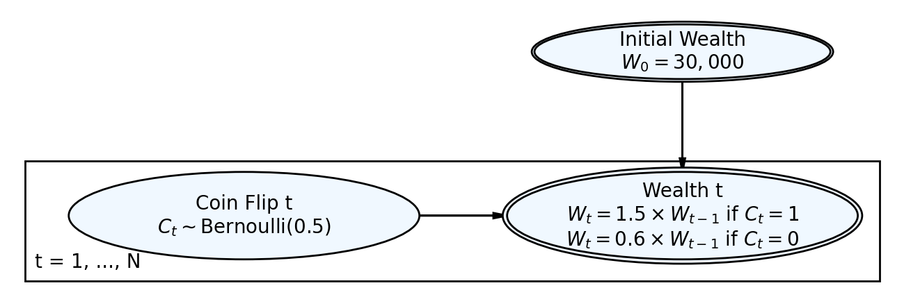
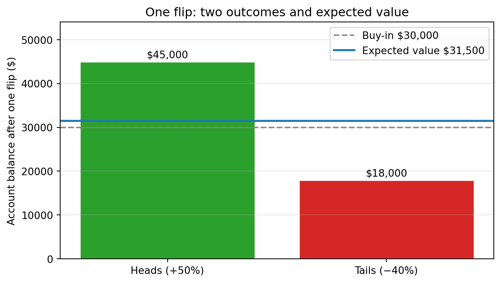
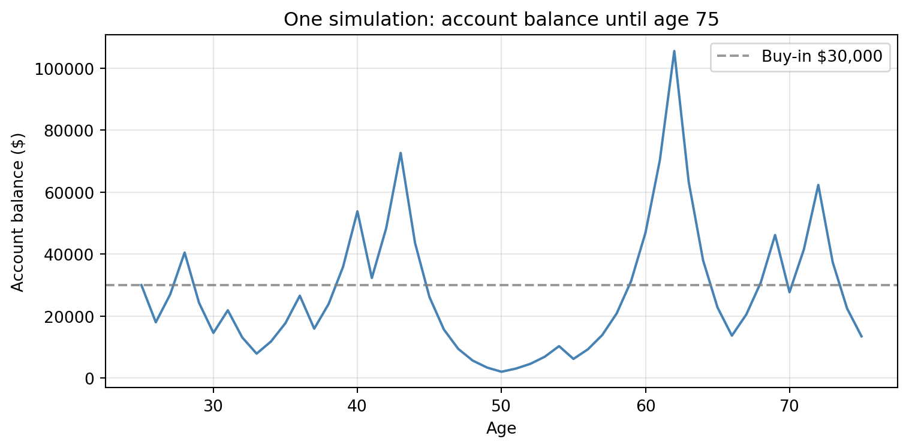
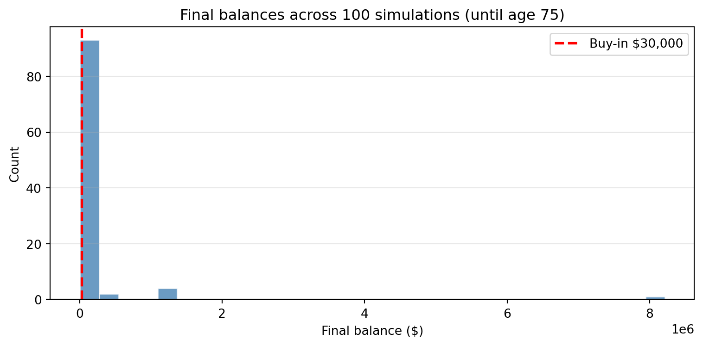
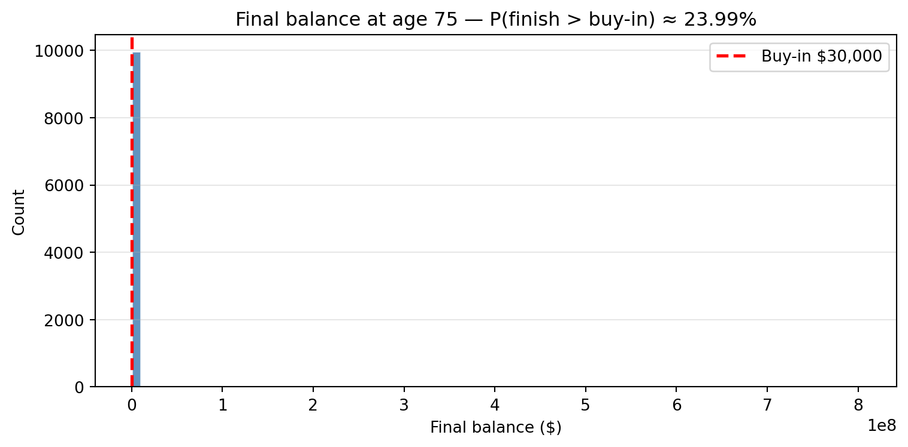
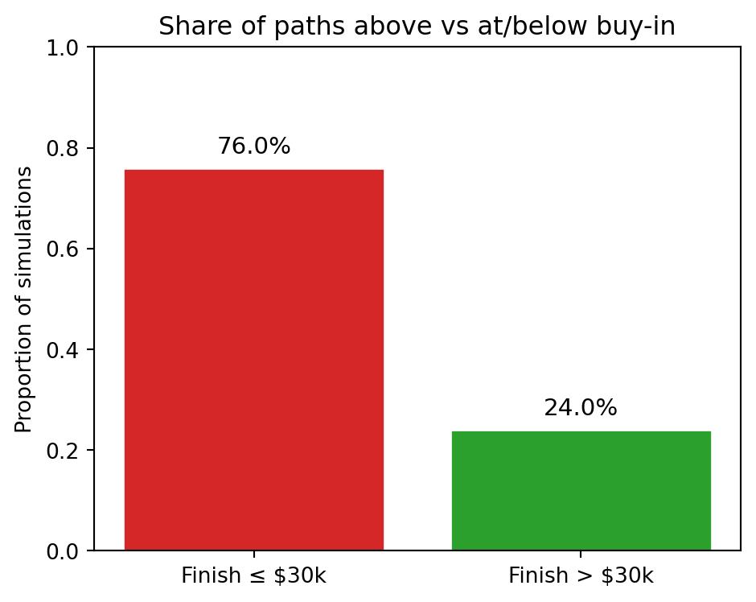
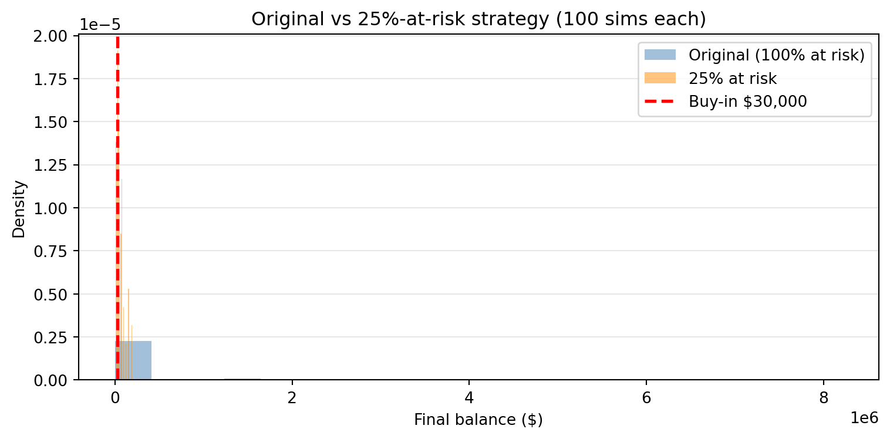
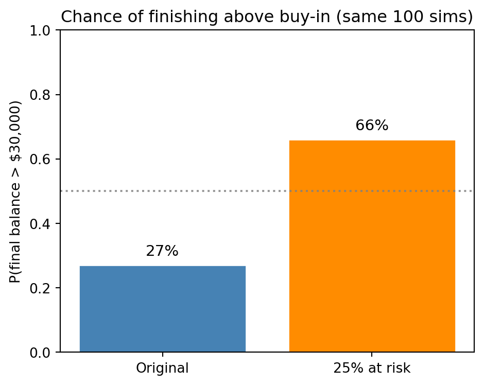
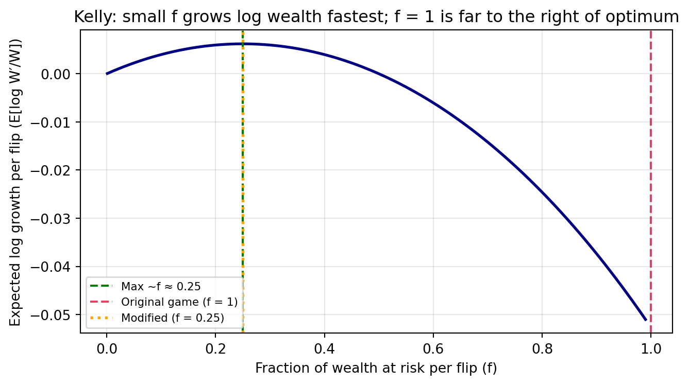

Simulation Challenge
Starter Template with To-Dos
🎲 Simulation Challenge - Starter Template
Warning⚠️ AI Partnership Required
Use Cursor AI for speed, but ensure you understand and can explain the results in your own words. Verify cursor’s calculations as investment simulation is tricky.
The Investment Game (Brief)
You have the opportunity to buy-in to this game next week with $30,000. Your job is to analyze the potential outcomes of the game and communicate why you should or should not buy-in.
Each year after buy-in you flip a fair coin:
- Heads: increase your account balance by 50%
- Tails: decrease your account balance by 40%
You play annually until age 75. Your mission is to analyze outcomes and communicate insights clearly.
Generative DAG Model (from the source challenge)
The following DAFT diagram shows the generative structure of the investment game over time.
Simulation Parameters
Analysis Tasks (Fill These In)
1) Expected Value After 1 Flip
Explain whether the expected value of your account balance after one flip is greater than, equal to, or less than $30,000. What is the gain in expected value as a percentage of your buy-in? Based on this simple analysis, state whether you would recommend buying into the game and why.

The expected value after one flip is $31,500—a 5.0% gain over the $30,000 buy-in. So the one-year expected value is greater than the initial investment: the 50% gain on heads and 40% loss on tails are not symmetric in dollar terms (you gain more on a win than you lose on a loss in absolute dollars). Based on this alone, the game has positive expected value per flip; if you could play this bet many times in isolation, the law of large numbers would favor buying in. That said, we play once and repeat for many years, so the distribution of outcomes (and the risk of ruin or deep drawdowns) matters as much as the single-flip expectation—which we explore next.
2) Single Simulation Over Time (Narrative + Plot)
Narrate and visualize what happens to your account balance over the course of one simulation run. Describe the trajectory and state whether you would be satisfied with this particular outcome. Explain your reasoning.

In this single run (seed 123), the account starts at $30,000 and is updated each year by the coin flip. The trajectory is volatile: early tails pull the balance down, and later heads can partly recover. In this particular path, the final balance at age 75 is $13461.0. Whether that outcome is “satisfying” depends on risk tolerance: it could be well above or well below $30,000 in other runs. One path is not enough to decide—we need many simulations to see the distribution of outcomes.
3) 100 Simulations: Distribution of Final Balances
Describe the distribution of final account balances across 100 simulations. Report the mean, median, and the probability of ending with more than your initial $30,000. Given these results, would you be satisfied with the likely outcomes? Explain your reasoning.

Across 100 runs, the mean final balance is \(np.float64(159731.0)** and the **median** is **\)np.float64(1508.0). The probability of ending with more than your initial $30,000 is np.float64(0.27) (about np.float64(27.0)% of paths). The median being below the buy-in indicates that more than half of the outcomes leave you worse off in dollar terms, despite the positive expected value per flip—the distribution is right-skewed, with a few very large outcomes pulling the mean up. Many paths end in deep drawdowns. Whether you would be “satisfied” depends on risk tolerance: if you cannot afford to lose a large portion of the $30,000, the high chance of finishing below $30,000 is a strong argument against buying in.
4) Probability Balance > $30,000 at Age 75 (Original Game)
Report the probability that your final balance exceeds $30,000. Interpret what this probability means for your investment decision—does this change your recommendation from Section 1?


Using 10,000 simulations for a stable estimate, the probability that your final balance at age 75 exceeds $30,000 is about np.float64(0.24) (i.e., roughly np.float64(24.0)% of paths finish above the buy-in). So in most runs you end with less than you put in, even though each individual flip has positive expected value. That changes the recommendation from Section 1: the one-flip EV is positive, but the multi-period game is highly risky—the multiplicative process and long horizon create a right-skewed distribution where the median and majority of outcomes are below $30,000. Unless you are comfortable with a high chance of losing money by 75, this probability supports a cautious or no buy-in from a risk perspective.
5) Modified Strategy (Bet Exactly 25% Each Round)
Instead of having the full balance at risk with each coin flip, assume only 25% of your balance is gambled each year. Compare this modified strategy to the original game: Which is riskier? Which has better upside? Which strategy would you recommend and why?


In the modified strategy, only 25% of the balance is at risk each year (so a head multiplies that part by 1.5 and a tail by 0.6; the rest is unchanged). Across 100 runs, the probability of finishing above \(30,000** with the 25% strategy is **np.float64(0.66)** (mean final **\)np.float64(54034.0), median $np.float64(40926.0)). The original game is riskier: wider swings and a lower P(> $30k). The 25% strategy has less upside (smaller max outcomes) but less downside and a higher chance of ending above the buy-in. For most people, the 25% strategy would be the more reasonable choice—similar positive expected growth per flip but with a more palatable distribution of outcomes. The original full-bet game is hard to recommend unless one can truly afford to lose a large fraction of the $30,000.
6) The Kelly Criterion

The Kelly Criterion says how much of your bankroll to bet each time to maximize long-run growth, assuming you can reinvest and repeat. For a bet with probability (p) of winning, win factor (b) (you win (b) times your stake), and lose factor (a) (you lose (a) times your stake), the optimal fraction is (f^* = - ) when that is positive. Here, each flip is 50/50 with a 50% gain on a win and 40% loss on a loss: in multiplicative form, you multiply by 1.5 or 0.6. The growth-optimal fraction of wealth to risk per flip is the (f) that maximizes (E[(1 + f R)]) where (R) is 0.5 or -0.4. Solving gives a Kelly fraction around 10–25% of wealth per flip (the curve above peaks near f ≈ 0.25 under this payoff structure), not 100%. So the original game (betting 100% each year) is far above Kelly—hence the high variance and high probability of finishing below the buy-in. The 25%-at-risk strategy is in the ballpark of growth-optimal sizing. The Kelly Criterion therefore supports favoring the modified strategy: it suggests betting a modest fraction of wealth each period rather than the full balance, which aligns with our recommendation to prefer the 25% strategy or to avoid the game if only the full-bet version is available.
Professional Presentation
- Clear narrative: tell the story succinctly (aim for a 1–5 minute read)
- Focus on insights: risk profiles, counter-intuitive results, practical implications
- Professional style: concise writing, clean visuals, hide code where appropriate (
echo: false) - Human interpretation: explain what results mean for real decisions